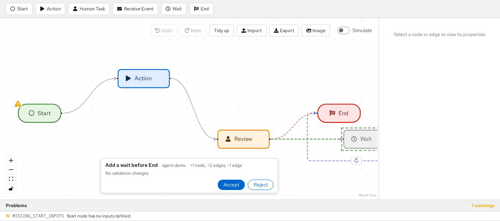
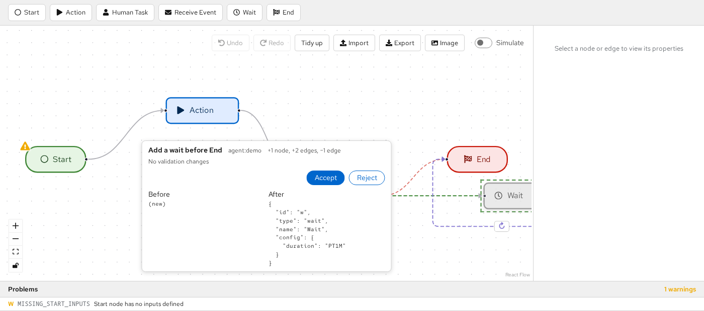
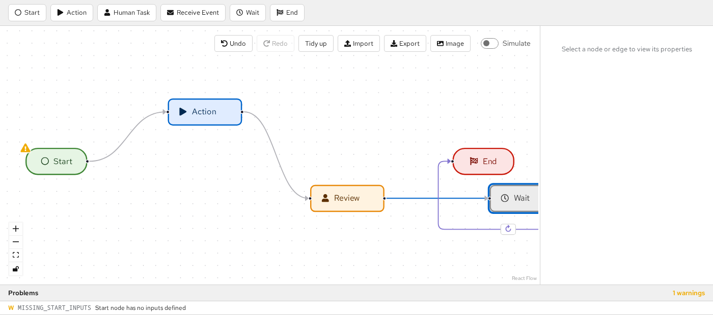
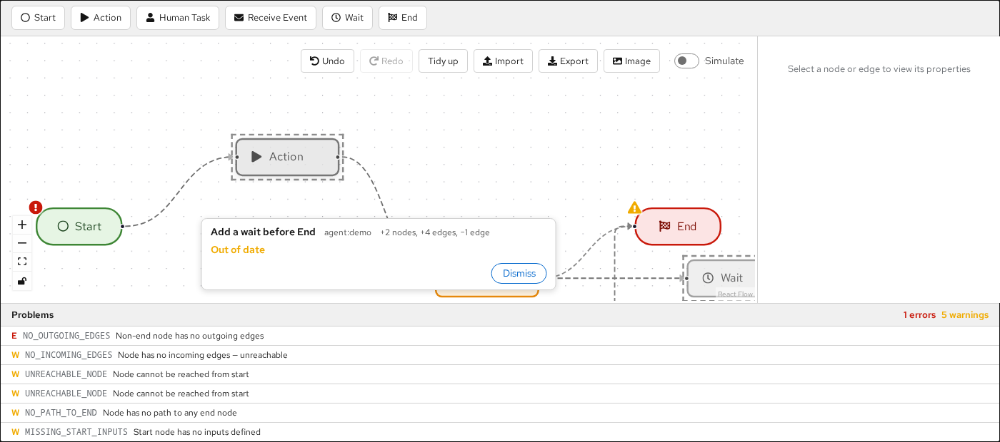
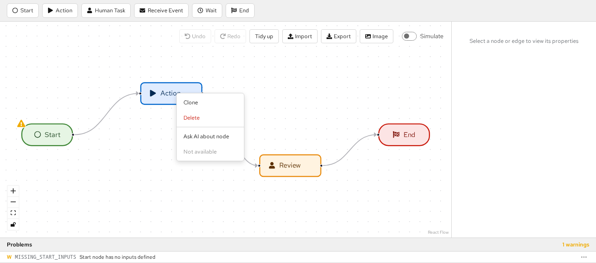
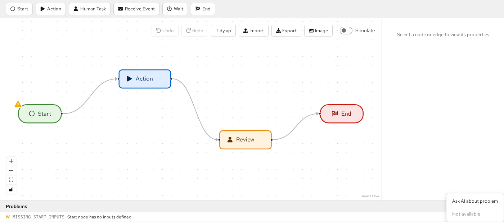
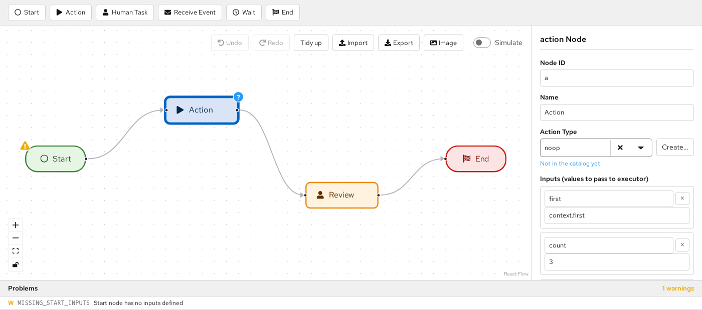

AI-Assisted Editing
WorkflowEditor can be driven by an AI agent while the user keeps editing the same workflow. This page
describes the building blocks a host application uses to do that.
Overview
Flow is AI-agnostic. The agent, the chat UI and any agent status display live in the host (for example
Apitomy Axiom). Flow exposes an edit API whose primitive is the change set: a list of operations
computed against a known content revision. The host can either stage a change set for the user to review
(propose) or apply it immediately as one undoable step (apply).
const editorRef = useRef<WorkflowEditorHandle>(null);
// ...
<WorkflowEditor ref={editorRef} workflow={seed} onChange={(workflow, meta) => sendToAgent(workflow, meta)} />;
// later, when the agent answers:
const result = editorRef.current!.propose(changeSetFromAgent);
Content revisions
A content revision identifies the content of a workflow, ignoring layout:
JCSis RFC 8785 JSON canonicalization, so key order and number formatting do not matter.stripLayoutremovespositionfrom every node. Every other field, including the workflowid,name,description,versionand config extension keys, is part of the content.- Layout-only edits (moving nodes) do not change the revision, and undoing back to identical content restores the identical value.
Hosts computing the revision server-side must hash exactly the Flow Workflow document they send to
the editor, with no host-specific fields added. Otherwise every change set will be rejected as stale.
import { computeContentRevision } from '@apitomy/flow-ui';
const revision = computeContentRevision(workflow); // "sha256:3f1c..."
In Java, use io.apitomy.flow.changeset.ContentRevision.of(workflow), which accepts either a Workflow
model or a Jackson JsonNode. Both implementations are verified by conformance/content-revision.json.
Change sets
interface ChangeSet {
id: string;
baseRevision: string; // the contentRevision the agent based this on
author: `agent:${string}` | 'host';
summary: string;
ops: ChangeOp[];
}
| Op | Fields | Effect |
|---|---|---|
addNode |
node |
Adds a node. A node without position is placed near its connected neighbours. |
updateNode |
id, patch: { name?, config? }, unset? |
Updates the name and shallow-merges config. |
renameNode |
id, newId |
Renames a node and rewrites source/target of attached edges. |
removeNode |
id |
Removes a node and every edge attached to it. |
addEdge |
edge |
Adds an edge; both endpoints must exist. |
updateEdge |
id, patch, unset? |
Shallow-merges edge fields (any field except id). |
removeEdge |
id |
Removes an edge. |
metadata |
patch: { name?, description?, version? } |
Updates workflow metadata. |
Ops apply in order and later ops see the effects of earlier ones. Application is atomic: any error leaves the workflow unchanged.
Patch semantics
updateNode.patch.configis merged shallowly into the existing config. Nested values such as theinputsandoutputsmappings are replaced whole.unsetlists top-level config keys (forupdateNode) or edge fields (forupdateEdge) to remove, for exampletimeoutorcondition. It is applied afterpatch; a key in both ismalformed.nullin a patch is stored as a value. It does not remove the key; useunsetfor that.
Removing one entry from a nested mapping means resending the whole mapping. To drop input foo from an
action node whose inputs are foo and bar:
const dropFoo: ChangeSet = {
id: 'cs-42', author: 'agent:assistant', summary: 'Stop passing foo to the action',
baseRevision: editorRef.current!.getSnapshot().contentRevision,
ops: [{ op: 'updateNode', id: 'notify', patch: { config: { inputs: { bar: 'context.bar' } } } }],
};
// unset: ['inputs'] would remove *all* inputs instead.
Errors
Failures are returned, never thrown, as { code, opIndex?, reason }. reason is human-readable; code
is stable and suitable for mapping to agent prompt hints.
| Code | Meaning |
|---|---|
target-missing |
The op references a node or edge that does not exist. |
duplicate-id |
An added or renamed element's id already exists. |
edge-endpoint-missing |
An edge's source or target does not exist. |
malformed |
The op is structurally invalid, for example a key in both patch and unset. |
read-only |
The editor is read-only (editor handle only). |
stale |
baseRevision does not match the current content revision. Has no opIndex. |
The pure functions are exported for use outside the editor:
import { applyChangeSet, applyChangeSetChecked } from '@apitomy/flow-ui';
const result = applyChangeSetChecked(workflow, changeSet); // also checks baseRevision
if (!result.ok) console.warn(result.error.code, result.error.opIndex, result.error.reason);
In Java, io.apitomy.flow.changeset.ChangeSets.apply(workflow, changeSet) and
ChangeSets.applyChecked(workflow, changeSet) take Jackson JsonNodes and return a sealed
ChangeSetResult (Applied(workflow) or Rejected(error)) with the same semantics and error codes. Both
implementations are verified by conformance/changesets.json. Java does not place positionless nodes.
The editor handle
Pass a ref to WorkflowEditor to obtain a WorkflowEditorHandle. None of its methods throw.
Inputs must be structured-cloneable plain JSON data; a change set that cannot be cloned is rejected as
malformed.
| Method | Result |
|---|---|
propose(cs) |
{ status: 'staged' } or { status: 'rejected', error }. On a read-only editor it returns 'staged' but shows no review bar. |
apply(cs) |
{ status: 'applied' } or { status: 'rejected', error } |
withdraw(id) |
Removes the staged proposal if its id matches. |
replace(workflow, origin?) |
Replaces the whole document as one undo step. origin defaults to 'host'. |
clearHighlights() |
Removes the applied-change highlight. |
getSnapshot() |
{ workflow, contentRevision, selection, problems } (a detached copy). |
apply produces exactly one undo step tagged with origin = cs.author. The workflow prop remains
seed-only; use replace to push a new document from the host.
const handle = editorRef.current!;
const { contentRevision } = handle.getSnapshot();
const result = handle.apply({ ...changeSet, baseRevision: contentRevision });
if (result.status === 'rejected' && result.error.code === 'stale') askAgentToRetry();
Review UX
- One proposal at a time. A new
proposereplaces the staged proposal; the old one resolves as'withdrawn'. - Preview. The canvas shows the proposal on top of the current document: added elements as dashed ghosts, modified and removed elements marked. The canvas stays editable, but proposal elements cannot be edited. Clicking a changed element shows a read-only before/after view in the review bar.
- Review bar. A floating "Proposed changes" panel at the bottom of the canvas shows the summary, author,
change counts and a validation delta ("introduces N / fixes M", using built-in validation plus
spi.validate). Accept runs the same path asapply; Reject discards the proposal. - Staleness. Any content edit makes the staged proposal stale, including undo and redo. Layout-only edits do not. A stale proposal shows "Out of date" and can only be Dismissed.
- Applied highlight. Elements added or modified by the most recently applied change set (via
applyor Accept) stay highlighted until the next user content edit,clearHighlights(), or the next applied change set. Disable it withhighlightApplied={false}.
A staged proposal that adds a Wait node before End: the new node and edges are dashed ghosts, and the removed edge is drawn dashed in red.

Clicking a changed element shows its before/after in the review bar:

After Accept, the change is one undo step and the changed elements stay highlighted:

A user content edit makes the proposal stale. Only Dismiss remains, and the overlay is greyed out:

Context actions
Context menus are the place to start AI work from the canvas. spi.contextActions is called each time a
menu opens. It receives a FlowContext and returns the host items, which are shown below the built-in
Clone/Delete items. Flow never shows a prompt itself: open your own UI from onSelect, anchored at
screenPosition.
| Surface | Opened by | Target |
|---|---|---|
| Canvas background | Right-click | { kind: 'canvas', flowPosition } |
| Node | Right-click; ContextMenu key or Shift+F10 when focused | { kind: 'node', nodeId } |
| Edge | Right-click; ContextMenu key or Shift+F10 when focused | { kind: 'edge', edgeId } |
| Inside a multi-selection | Right-click on a selected element | { kind: 'selection', nodeIds, edgeIds } |
| Problems panel row | Right-click; the row's "⋯" button | { kind: 'problem', problem } |
const spi: EditorSpi = {
contextActions: (context) => [
{
id: 'ask-ai',
label: context.target.kind === 'problem' ? 'Ask AI to fix this' : 'Ask AI…',
onSelect: (chosen) => openPrompt({
anchor: chosen.screenPosition,
// Use the revision the user was looking at as the change set's base.
onSubmit: async (text) => editorRef.current?.propose(
await agent.proposeChange({ text, context: chosen, baseRevision: chosen.contentRevision })),
}),
},
],
};
- Read-only editors: built-in items are hidden but host items are shown. Check
context.readOnlyto hide your own items as well. - Interactivity lock: when the canvas interactivity lock is on, built-in items are hidden and host items are still shown.
- Simulation: no menus open while simulating.
- Problems "⋯" button: disabled while simulating, and when
contextActionsreturns no items for that row. - Nothing to show: if neither Flow nor the host has an item, no menu opens.
- Fresh items:
contextActionsruns on every opening, so items can depend on the current state, for example to hide AI actions while an agent is busy. It is also called, with errors silenced, to decide whether a Problems row's "⋯" button is enabled. - Errors: if
contextActionsthrows or returns something invalid, Flow logs it and still shows the built-in items. If anonSelectthrows, the error is logged and the menu closes.


Live Action Type catalog
The editor loads spi.actionTypes once for the whole editor. To change the catalog, for example after an
agent creates an Action Type, pass a new array or provider function. The editor reloads it without a
remount, and while a provider function loads it keeps the previous list visible. A catalog that loaded empty
shows a free-form Action Type field and marks every referenced Action Type as unresolved.
const [catalog, setCatalog] = useState<ActionTypeDescriptor[]>(initialCatalog);
const spi = useMemo<EditorSpi>(() => ({
actionTypes: catalog,
openActionType: ({ value, resolved }) => (resolved ? openEditor(value) : openCreateDialog(value)),
}), [catalog]);
// Later, when Axiom reports a new Action Type:
setCatalog(previous => [...previous, created]);
- Unresolved references: once the catalog has loaded, an action node whose Action Type is not in it shows
a "?" marker, and the Properties panel says "Not in the catalog yet". Both disappear as soon as the catalog
includes the value. Built-in validation does not report unknown Action Types; use
spi.validateif you want a problem. - Opening your editor: when
openActionTypeis provided, the Properties panel shows Open (or Create… for an unresolved value) next to the Action Type field. This also applies in read-only editors. To offer the same from the canvas, add a host item withcontextActions.

Events
onChange(workflow, { contentRevision, origin })—originis'user','host'oragent:<name>. Accepting a proposal firesonChangeonce, with the agent origin.onProposalResolved(id, outcome)—outcomeis'accepted','rejected','stale'or'withdrawn'.'stale'fires at the moment of invalidation.onSelectionChange({ nodeIds, edgeIds })— fires only when the selection actually changes; useful for opening related host tabs or giving the agent "user is looking at X" context.
<WorkflowEditor ref={editorRef} workflow={seed}
onChange={(workflow, { contentRevision, origin }) => save(workflow, contentRevision, origin)}
onProposalResolved={(id, outcome) => agent.notify(id, outcome)}
onSelectionChange={({ nodeIds, edgeIds }) => agent.setFocus(nodeIds, edgeIds)} />
Read-only behaviour
In a read-only editor, propose renders the preview without the review bar, which is useful for displaying
a diff. apply is refused with the code read-only.
const result = readOnlyRef.current!.apply(changeSet);
// { status: 'rejected', error: { code: 'read-only', reason: '...' } }
Limitations
- Placement of added nodes. Added nodes without a position are placed next to their neighbours without moving existing nodes. This can produce edges that look like loop-backs; use Tidy up to re-layout.
- Stale overlays. A stale proposal's overlay is diffed against the current document, so while it is shown greyed out the user's own later edits also appear as changes.
- Snapshot problems. The
problemsingetSnapshot()may lag by one render after a handle dispatch (propose,apply,replace).